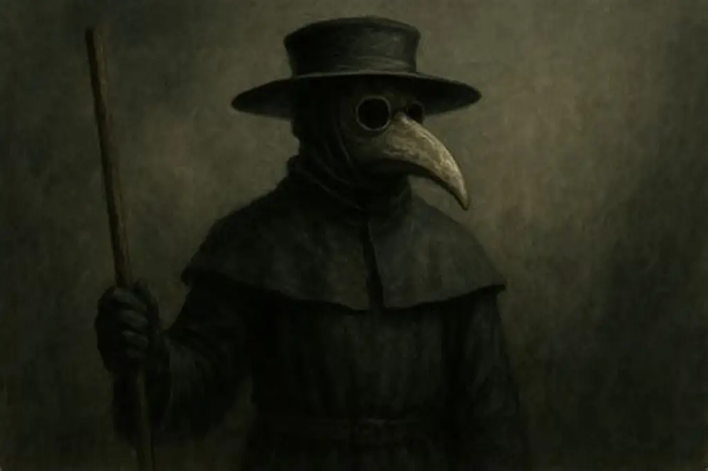

Containment Procedures
SCP-049 is to be contained in a standard humanoid containment chamber at Site-19. The chamber is to be furnished with a small desk, chair, and writing materials. Direct physical contact with SCP-049 is prohibited without Level 3 approval and the use of thick, puncture-resistant gloves. All instances of SCP-049-1 are to be terminated immediately upon identification. In the event of a containment breach involving SCP-049, Mobile Task Force Epsilon-6 ("Village Idiots") is to be deployed.
Description
SCP-049 appears as a humanoid figure approximately 1.9 meters tall, wearing a long, black robes reminiscent of a medieval plague doctor. The figure's face is obscured by a curved, metallic mask resembling a bird's beak. SCP-049 is capable of speech and has demonstrated extensive knowledge of human anatomy and pathology, despite claiming to be from a time before modern medicine.
When SCP-049 touches a human victim with its hands, the victim will typically enter a state of rigor mortis within minutes. Approximately one hour after death, the victim will reanimate as SCP-049-1, a zombie-like entity that will attempt to spread the "pestilence" to other humans by touch. SCP-049-1 instances are extremely aggressive and resistant to pain, but can be terminated by conventional means.